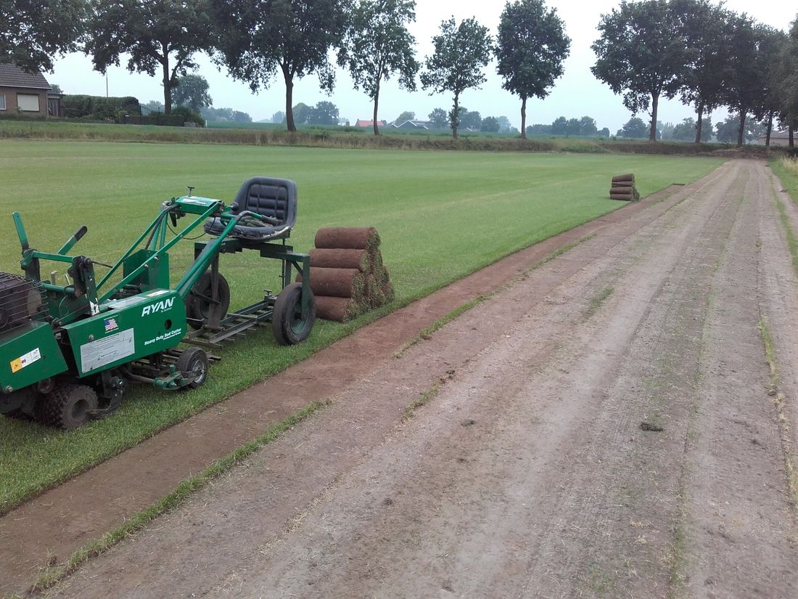
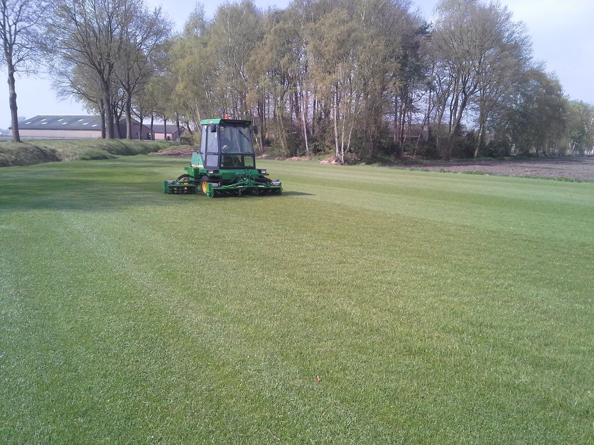
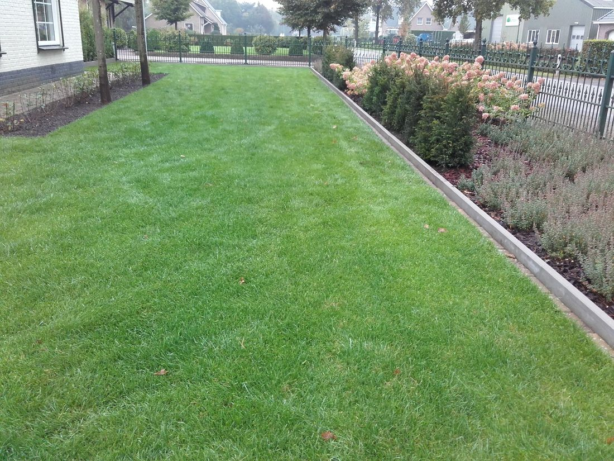

Graszoden van eigen veld
Dagverse graszoden van het juiste mengsel. Zelf afhalen, laten bezorgen of door ons laten aanleggen.


Binnen één dag een mooi gazon
Bezig met een nieuwe tuin, of is uw gazon toe aan een opknapbeurt? Met graszoden heeft u binnen één dag een kant-en-klare grasmat. Voor kleine en grote projecten, voor particulieren en hoveniers.
Het gras wordt geleverd in rollen. Die zijn makkelijk te hanteren en zelf af te halen. U kunt de graszoden ook laten bezorgen, of wij leggen uw gazon compleet voor u aan.
Naast de verkoop van graszoden kunt u bij ons ook terecht voor advies of onderhoud van uw gazon.
Zelf leggen? Zo maakt u de grond klaar
Bij twijfel over de grond kan er altijd een grondmonster genomen worden. Dan meten we de bodemvruchtbaarheid en verbeteren die als het nodig is.
- Oud gras wegBij een bestaand gazon de oude grasmat kort frezen of verwijderen.
- Spitten of frezenBij een grote tuin kan dat ook met een graafmachine.
- BemestenOrganische mest en kalk goed door de bovenste laag mengen, zo verbranden de jonge wortels niet.
- Aandrukken en vlak makenMet een hark of plank. Langs de stoep 2 cm onder de verharding blijven.
Onderhoud van uw nieuwe gazon
Na 2 à 3 weken zijn de graszoden vastgegroeid. Daarna houdt u het gras zo mooi.
De eerste weken
Na een week mag u maaien, in de lengterichting van de zoden en op de hoogste stand. Na 4 tot 6 weken de eerste bemesting.
Maaien
Met een goed geslepen machine op zo'n 3,5 cm. In voor- en najaar 1 keer per week, daartussen 1 à 2 keer.
Bemesten
Liefst organisch of langwerkend. Bekalken in februari, de laatste bemesting in oktober.
Verticuteren
Haalt de viltlaag van oud en dood gras weg, zodat er weer lucht bij de wortels komt. In het voor- en/of najaar.
Mos
Ontstaat door zure grond, te kort maaien of schaduw. Mosbestrijder en verticuteren helpen, daarna bemesten en beluchten.
Sproeien
Alleen bij langdurige droogte, en dan liever één keer lang dan een paar keer een beetje.
Offerte aanvragen
Vertel kort wat u wilt met uw tuin of hoeveel m² graszoden u nodig heeft. We nemen snel contact met u op.
Liever even bellen?
Bel of app ons gerust, ook voor graszoden.